คอร์สอบรมภายใน
ใช้ Codex ช่วยทำงาน
สาย QA: ให้ Codex ช่วยหา bug และเขียนเทส
หน่วยงานอื่น: ให้ Codex ช่วยทำเครื่องมือเล็ก ๆ ไว้ใช้เอง
เรียนจบแล้วได้อะไร
ทุกคนได้ผลงานจริงกลับไป 1 ชิ้น
สาย QA
ชุดเทสของระบบ 1 เรื่อง
test case ที่เขียนจากข้อกำหนด
เทสอัตโนมัติ 5 ข้อขึ้นไป รันกี่รอบก็ได้ผลเหมือนเดิม
รายงาน bug ที่ dev อ่านแล้วทำตามเจอเลย
สายหน่วยงาน
เครื่องมือช่วยงานของตัวเอง 1 ชิ้น
ตัวเลขตรงกับที่คิดเอง
ใส่ข้อมูลแปลก ๆ แล้วไม่พัง
เพื่อนเปิดวิธีใช้แล้วใช้เองได้ ไม่ต้องมาถาม
ลำดับการเรียน
เรียนตามลำดับนี้
| ลำดับ | QA | หน่วยงาน |
|---|---|---|
| 1 | พื้นฐาน (เรียนด้วยกัน) | พื้นฐาน (เรียนด้วยกัน) |
| 2 | เขียน test case · ลองเล่นหา bug | เลือกงานที่จะทำ · รวมไฟล์ Excel |
| 3 | เทสหน้าเว็บอัตโนมัติ · เทส API | ทำหน้าเว็บเครื่องมือ · ลองข้อมูลแปลก ๆ |
| 4 | รันเทสทั้งชุด | เขียนวิธีใช้ แล้วแชร์ |
| 5 | โชว์ผลงาน | โชว์ผลงาน |
จำไว้ตลอดคอร์ส
กฎ 3 ข้อ
1
เลือก Ask for approval
Codex จะถามก่อนทำอะไรเสี่ยง ห้ามเลือก Full access
2
ห้ามใส่ข้อมูลลับ
รหัสผ่าน ข้อมูลลูกค้า ข้อมูลส่วนตัวของใคร ห้ามพิมพ์ลงไป
3
เปิดแค่โฟลเดอร์งาน
ห้ามเปิดทั้ง Desktop หรือไดรฟ์แชร์ให้ Codex
ก่อนเริ่มเรียน
โปรแกรมที่ทุกคนต้องลง
| โปรแกรม | เอาไว้ทำอะไร | ลงยังไง |
|---|---|---|
| แอป ChatGPT (มี Codex ในตัว) | ตัวหลักที่ใช้ทั้งคอร์ส | Microsoft Store ค้นหา ChatGPT แล้วเข้าสู่ระบบด้วยอีเมลบริษัท |
| Git | ให้ Codex เซฟจุด และย้อนกลับได้ | git-scm.com/download/win แล้วกด Next จนจบ |
| Python | รันโปรแกรมจัดการ Excel ที่ Codex เขียนให้ | python.org ติ๊ก Add python.exe to PATH ก่อนกด Install |
| Node.js (รุ่น LTS) | เปิดระบบตัวอย่าง และรันเทส | nodejs.org แล้วกด Next จนจบ |
| VS Code | เปิดอ่านและแก้ไฟล์ที่ Codex ทำให้ | code.visualstudio.com |
ลงให้ครบทุกตัว ไม่ต้องลง WSL หรือ Docker ถ้าเครื่องขอรหัส admin ให้แจ้ง IT
ลงเสร็จแล้ว
เช็กว่าลงครบหรือยัง
กดปุ่ม Start พิมพ์ PowerShell แล้วกด Enter จากนั้นพิมพ์ทีละบรรทัด แล้วกด Enter
| โปรแกรม | พิมพ์ | ถ้าลงแล้ว จะขึ้นประมาณนี้ |
|---|---|---|
| Git | git --version | git version 2.xx.x.windows.1 |
| Python | python --version | Python 3.xx.x |
| Node.js | node -v | เลขรุ่นที่ขึ้นต้นด้วย v เช่น v24.x.x |
| VS Code | code --version | บรรทัดแรกเป็นเลขรุ่น เช่น 1.xx.x |
| แอป ChatGPT | เปิดจากเมนู Start | เปลี่ยนเป็น Codex ที่หัวแถบซ้ายได้ |
ขึ้นว่า is not recognized: ปิด PowerShell เปิดใหม่ ยังไม่ได้ให้รีสตาร์ตเครื่อง
ลองทำ 0
เตรียมไฟล์ฝึก แล้วทักทาย Codex
- เปิด File Explorer พิมพ์ %USERPROFILE% ในช่องที่อยู่ด้านบน กด Enter แล้วสร้างโฟลเดอร์ใหม่ชื่อ codex-practice
- โหลด practice-kit.zip จาก codex.jeerawut.com/files เปิดโฟลเดอร์ Downloads คลิกขวาที่ไฟล์ เลือก Extract All กด Browse เลือกโฟลเดอร์ codex-practice แล้วกด Extract
- เปิดแอป ChatGPT เปลี่ยนเป็น Codex กด Ctrl+O (Open Folder) เลือกโฟลเดอร์ codex-practice แล้วกด Trust folder
- เลือก Ask for approval ใต้ช่องพิมพ์ แล้ววางข้อความทางขวา กดส่ง
พิมพ์ให้ Codex
ช่วยดูในโฟลเดอร์ practice-kit หน่อย ว่ามีโฟลเดอร์อะไรบ้าง แต่ละอันเอาไว้ทำอะไร ยังไม่ต้องแก้ไฟล์นะ
ทำได้แล้ว ถ้า Codex บอกได้ว่ามีโฟลเดอร์ common, qa, biz และไม่ได้ไปแก้ไฟล์อะไร
ลองทำ 0 · ภาพ 1/6
เลือก Codex ที่หัวแถบซ้าย
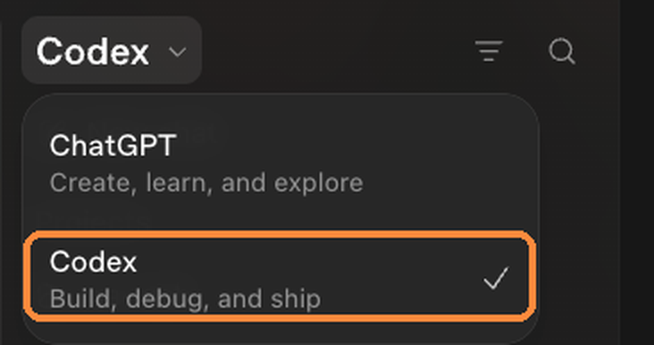
กดชื่อที่หัวแถบซ้าย แล้วเลือก Codex (Build, debug, and ship) จะมีเครื่องหมายถูกขึ้นหลังชื่อ
ลองทำ 0 · ภาพ 2/6
กด Ctrl+O แล้วเลือกโฟลเดอร์
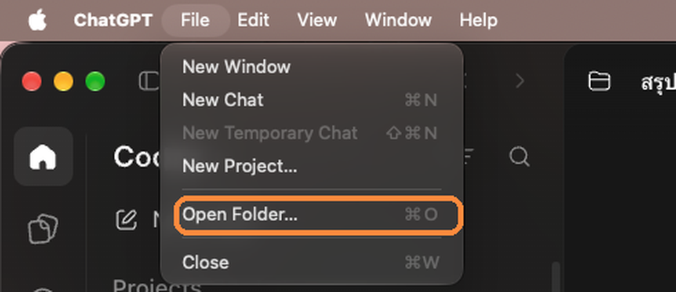
ภาพจาก Mac จึงเห็น ⌘O บน Windows กด Ctrl+O (ปุ่มในแอปอาจเขียนว่า Open Folder หรือ Add new project) แล้วเลือกโฟลเดอร์ codex-practice
ลองทำ 0 · ภาพ 3/6
กด Trust folder
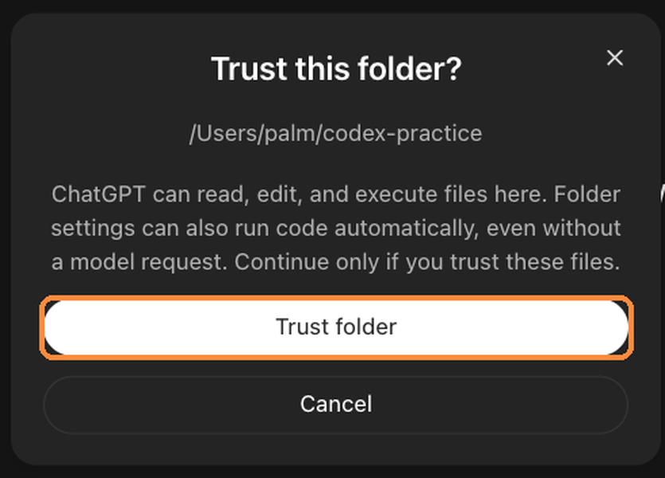
Codex ถามก่อนว่าไว้ใจโฟลเดอร์นี้ไหม เป็นโฟลเดอร์ฝึกของเราเอง กด Trust folder ได้เลย ถ้าเป็นโฟลเดอร์ที่ได้มาจากคนอื่น ให้ถามผู้สอนก่อน
ลองทำ 0 · ภาพ 4/6
โฟลเดอร์ขึ้นเป็น project ในแถบซ้าย
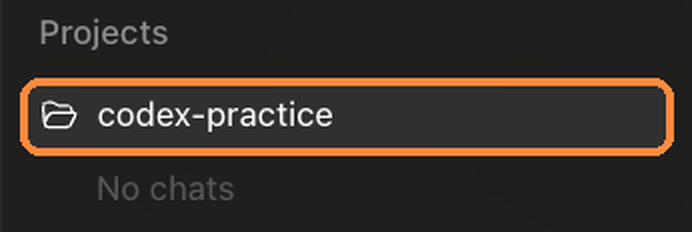
ใต้คำว่า Projects จะมี codex-practice แชตที่เริ่มตอนนี้จะทำงานในโฟลเดอร์นี้ ส่วนเหนือช่องพิมพ์ก็จะขึ้นชื่อโฟลเดอร์เดียวกัน
ลองทำ 0 · ภาพ 5/6
เลือก Ask for approval
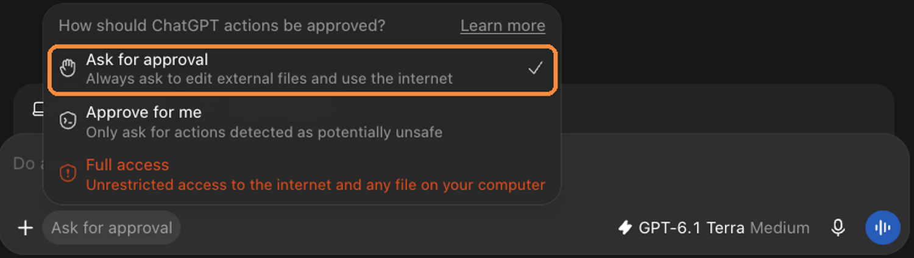
กดปุ่มใต้ช่องพิมพ์ เลือกบรรทัดแรก Ask for approval ห้ามเลือก Full access ที่เป็นตัวสีแดง
ลองทำ 0 · ภาพ 6/6
วางข้อความ กดส่ง แล้วอ่านคำตอบ
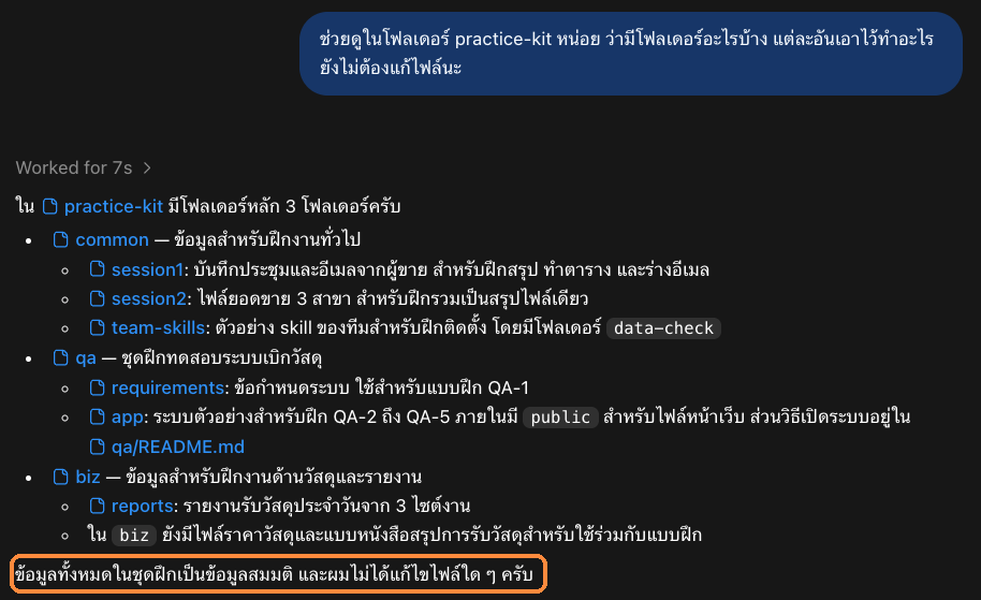
คำตอบต้องบอกโฟลเดอร์ common, qa, biz และบอกว่าไม่ได้แก้ไฟล์ ถ้าคำตอบตรงแบบนี้ ถือว่าผ่านลองทำ 0
ในแอป ChatGPT มี 2 แบบ
เลือกให้ตรงกับงาน
ChatGPT
ถาม-ตอบ ทำเอกสารครั้งเดียว
ถามเรื่องที่สงสัย ร่างข้อความ สรุปเอกสาร ทำตาราง ทำสไลด์ ที่ทำเสร็จแล้วก็จบ
Codex
ทำงานกับไฟล์ในเครื่อง
ให้ช่วยจัดการไฟล์ ทำโปรแกรมเล็ก ๆ ที่ใช้ซ้ำได้ทุกสัปดาห์
สลับได้ที่ชื่อหัวแถบซ้ายของแอป คอร์สนี้ใช้ Codex เป็นหลัก ของที่ทำไว้ใช้ซ้ำได้ จะช่วยประหยัดเวลาไปได้เรื่อย ๆ
วิธีสั่งงาน
บอกให้ครบ 5 อย่าง Codex จะเดาน้อยลง
อยากได้อะไร: ทำอะไร ให้ใครใช้
ใช้ข้อมูลจาก: ไฟล์ไหน
ห้ามทำอะไร: เช่น ห้ามแก้ไฟล์เดิม ห้ามเดา
อยากได้ผลแบบไหน: ชื่อไฟล์ หน้าตา คอลัมน์
ดูยังไงว่าถูก: ตัวเลขไหนต้องตรง
บอกแผนก่อน ยังไม่ต้องแก้ไฟล์
ไม่แน่ใจตรงไหน ถามก่อน อย่าเดา
ลองทำจริงก่อน แล้วค่อยบอกว่าเสร็จ
ลองทำ 1
สรุปบันทึกประชุม 2 แบบ แล้วเทียบกัน
- กด Ctrl+O (Open Folder) เลือกโฟลเดอร์ practice-kit\common\session1 แล้วกด Trust folder จะได้ project ใหม่ในแถบซ้าย
- ลองสั่งสั้น ๆ ก่อน: สรุป @meeting-note.txt ให้หน่อย
- พิมพ์ /new เพื่อเริ่มแชตใหม่ แล้วสั่งแบบบอกครบ 5 อย่างตามทางขวา
- เทียบกัน: แบบไหนมีชื่อคนหรือวันที่ ที่ในบันทึกไม่มี
อยากได้อะไร: สรุปประชุมให้หัวหน้าที่ไม่ได้เข้า อ่านจบใน 1 นาที
ใช้ข้อมูลจาก: @meeting-note.txt
ห้ามทำอะไร: ห้ามเติมชื่อ วันที่ ตัวเลข ที่บันทึกไม่ได้เขียนไว้ ถ้าไม่มีให้เขียนว่า "ไม่ระบุ"
อยากได้ผลแบบไหน: 3 หัวข้อ เรื่องที่ตกลงแล้ว / งานที่ต้องทำ (ใครทำ เสร็จวันไหน) / เรื่องที่ยังค้าง
ดูยังไงว่าถูก: ทุกงานมีชื่อคนกับวันที่จากบันทึก หรือเขียนว่า "ไม่ระบุ"
ทำได้แล้ว ถ้า ทุกเรื่องและทุกงานในผลลัพธ์หาเจอในบันทึก และบอกได้ว่าแบบสั้นแต่งอะไรเอง หรือขาดอะไรไป (เช่น ไม่บอกว่าช่องไหนไม่ระบุ)
ลองทำ 1 · ภาพ 1/7
กด Ctrl+O เลือกโฟลเดอร์ session1
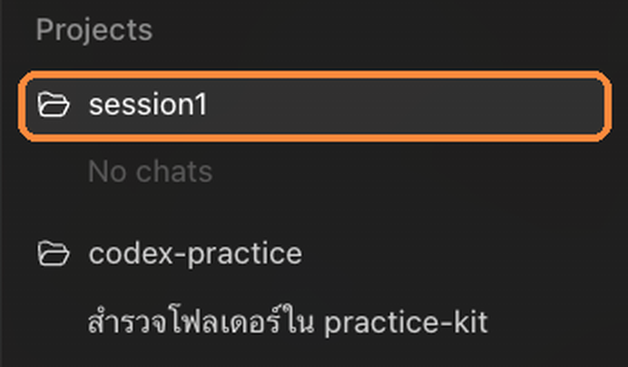
เลือก practice-kit\common\session1 แล้วกด Trust folder จะได้ project ใหม่ชื่อ session1 ส่วน codex-practice ยังอยู่ กดสลับไปมาได้
ลองทำ 1 · ภาพ 2/7
พิมพ์ @ แล้วเลือกไฟล์
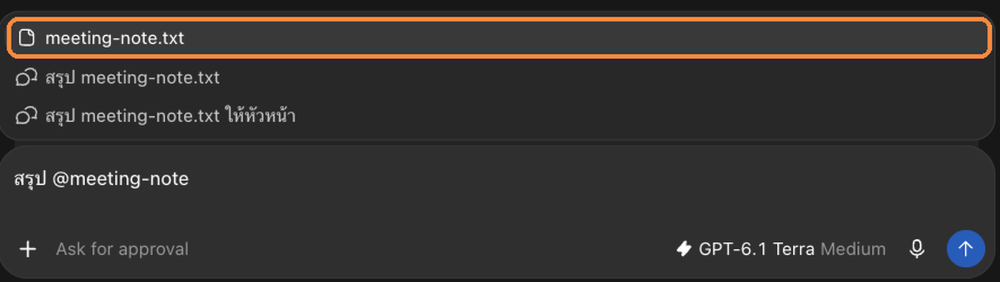
พิมพ์ สรุป @meeting แล้วเลือกบรรทัดที่มีไอคอนกระดาษ บรรทัดที่เป็นรูปฟองแชตคือแชตเก่า ไม่ใช่ไฟล์
ลองทำ 1 · ภาพ 3/7
ชื่อไฟล์กลายเป็นป้ายสีฟ้า แล้วกดส่ง
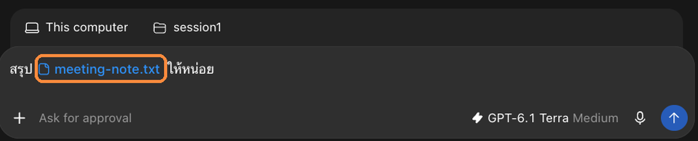
ป้ายสีฟ้าที่มีไอคอนกระดาษแปลว่า Codex จะอ่านไฟล์นี้ พิมพ์ต่อว่า ให้หน่อย แล้วกด Enter
ลองทำ 1 · ภาพ 4/7
อ่านผลแบบสั่งสั้น
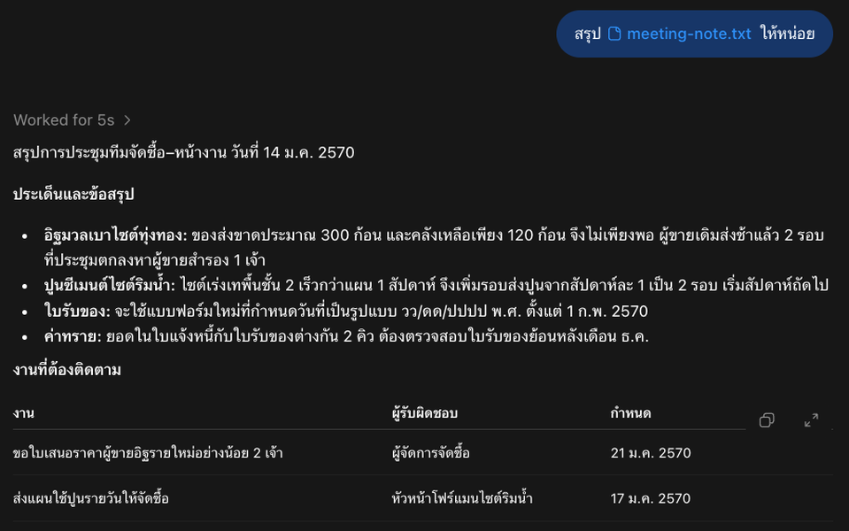
จดไว้ว่ามีชื่อคน วันที่ หรือตัวเลขตรงไหนบ้าง เดี๋ยวเอาไปเทียบกับแบบบอกครบ 5 อย่าง
ลองทำ 1 · ภาพ 5/7
พิมพ์ /new แล้วกด Enter
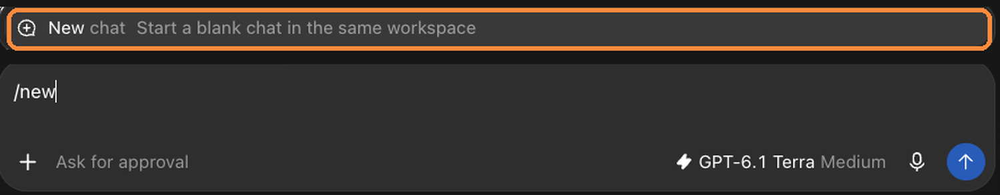
ได้แชตเปล่าใน project เดิม Codex จะไม่เห็นคำตอบรอบแรก เทียบ 2 แบบได้ยุติธรรม
ลองทำ 1 · ภาพ 6/7
พิมพ์คำสั่งแบบบอกครบ 5 อย่าง
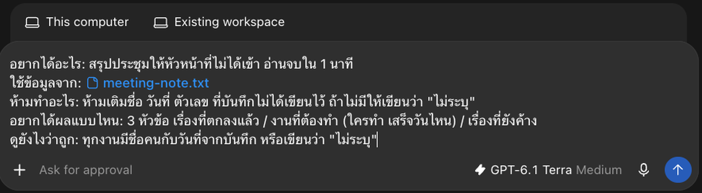
ขึ้นบรรทัดใหม่ด้วย Shift+Enter (กด Enter อย่างเดียวจะส่งทันที) ใส่ไฟล์ด้วย @ เหมือนภาพ 2/7
ลองทำ 1 · ภาพ 7/7
เทียบผล: ดูช่องที่เขียนว่า ไม่ระบุ
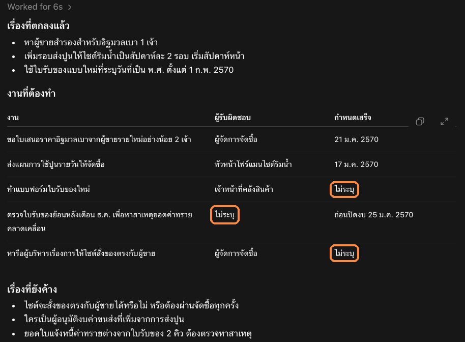
ช่องไหนบันทึกไม่ได้บอก Codex ต้องเขียนว่า ไม่ระบุ
จากนั้นย้อนไปดูภาพ 4/7 (ผลแบบสั่งสั้น) ว่าแบบสั่งสั้นเติมอะไรขึ้นมาเองหรือเปล่า
ทำงานกับ Codex ทุกครั้ง
เซฟก่อนสั่ง ตรวจก่อนเชื่อ
1
เซฟจุด
เก็บงานไว้ ก่อนเริ่ม
2
สั่งงาน
ให้บอกแผนก่อน แล้วค่อยทำ
3
ดูว่าแก้อะไร
ให้ Codex สรุป ว่าเปลี่ยนไฟล์ไหน
4
ตรวจผล
ลองใช้จริง เทียบตัวเลข กับที่คิดเอง
5
เก็บหรือย้อน
ถูกก็เซฟ ผิดก็ย้อน กลับจุดเดิม
ผิด 2 รอบติด อย่าสั่งแก้ต่อในแชตเดิม เริ่มแชตใหม่ด้วย /new แล้วบอกให้ชัดขึ้น
ปุ่มย้อนกลับของงาน
ไม่ต้องจำคำสั่ง บอก Codex ได้เลย
| อยากทำ | พิมพ์บอก Codex |
|---|---|
| เริ่มใช้กับโฟลเดอร์ใหม่ | เปิดใช้ git ในโฟลเดอร์นี้ แล้ว commit จุดแรกให้หน่อย |
| เซฟจุด | commit งานตอนนี้ไว้ ตั้งชื่อว่า ก่อนแก้รายงาน |
| ดูว่าแก้อะไรไปบ้าง | ใช้ git เช็กให้ดูหน่อย ว่าแก้ไฟล์ไหนไปบ้าง แก้อะไร |
| ย้อนกลับ | ย้อนทุกไฟล์กลับไปจุดที่ commit ล่าสุด |
| ดูจุดที่เคยเซฟ | แสดงประวัติ commit ทั้งหมด |
เซฟก่อนสั่งงานทุกครั้ง พังเมื่อไหร่ก็ย้อนกลับได้
ลองทำ 2
ให้ Codex รวม 3 ไฟล์ แล้วลองย้อนกลับ
- กด Ctrl+O เลือกโฟลเดอร์ practice-kit\common\session2
- พิมพ์: เปิดใช้ git ในโฟลเดอร์นี้ แล้ว commit จุดแรก ชื่อ ก่อนแก้
- ส่งข้อความทางขวา แล้วสั่ง: ใช้ git เช็กว่าแก้ไฟล์ไหนไปบ้าง
- คิดยอดสาขาเหนือเอง ถ้าตรงสั่ง commit ถ้าไม่ตรงสั่ง: ย้อนกลับไปจุดล่าสุด
พิมพ์ให้ Codex
รวมไฟล์ sales-north.csv sales-central.csv sales-south.csv เป็นไฟล์ summary.csv สรุปยอดตามสาขา และตามกลุ่มสินค้า ใช้ PowerShell เท่านั้น บันทึกให้ Excel เปิดภาษาไทยได้ ห้ามแก้ไฟล์เดิม แล้วบอกยอดรวมทั้งหมด
ทำได้แล้ว ถ้า ยอดรวมตรงกับที่ผู้สอนเฉลย และ Codex บอกได้ว่ามีจุดเซฟ 2 จุด
ลองทำ 2 · ภาพ 1/3
Codex ขออนุญาตก่อนรันคำสั่ง
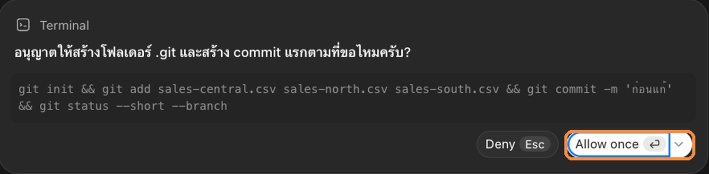
อ่านคำสั่งในกรอบก่อนว่าจะทำอะไร ถ้าเป็นงานในโฟลเดอร์ฝึกตามที่สั่ง กด Allow once ถ้าไม่แน่ใจกด Deny
ลองทำ 2 · ภาพ 2/3
เซฟจุดแรกแล้ว
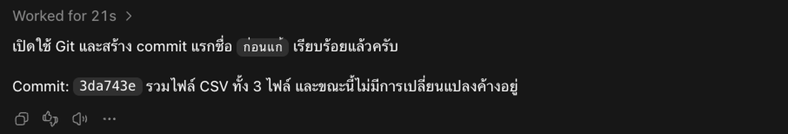
Codex บอกเลข commit กับชื่อจุดเซฟ ก่อนแก้ แปลว่าเซฟจุดแรกเรียบร้อย พังเมื่อไหร่ย้อนกลับมาจุดนี้ได้
ลองทำ 2 · ภาพ 3/3
รวมไฟล์ แล้วเช็กด้วย git
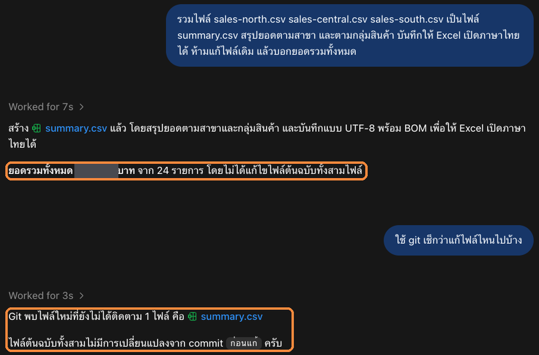
ยอดรวมต้องตรงกับเฉลย และ git ต้องบอกว่ามีไฟล์ใหม่ summary.csv ส่วนไฟล์เดิม 3 ไฟล์ไม่ถูกแก้
เขียนครั้งเดียว ใช้ได้ตลอด
AGENTS.md เก็บกฎ ส่วน skill เก็บคำสั่งที่ใช้บ่อย
AGENTS.md
กฎที่ Codex อ่านทุกครั้ง
เช่น ตอบเป็นภาษาไทย ห้ามลบไฟล์
วางไฟล์ไว้ในโฟลเดอร์งาน Codex จะอ่านเอง
แก้กฎแล้ว เริ่มแชตใหม่ด้วย /new
Skill
คำสั่งที่ใช้บ่อย เก็บไว้เรียกใช้
ให้ $skill-creator ช่วยสร้าง
เรียกใช้ด้วย $ ตามด้วยชื่อ
อะไรที่สั่งซ้ำเกิน 3 ครั้ง ทำเป็น skill ได้เลย
ลองทำ 3
ตั้งกฎให้ Codex แล้วทำ skill แรก
- วางเมาส์ที่ project codex-practice ในแถบซ้าย กดรูปดินสอ แล้วส่งข้อความทางขวา
- พิมพ์ /new แล้วถาม: ตอนนี้คุณอ่านกฎจากไฟล์ AGENTS.md ไหนอยู่
- พิมพ์ $skill-creator แล้วบอกว่าอยากได้ skill ชื่อ meeting-summary ที่สรุปประชุมแบบลองทำ 1
- พิมพ์ /new แล้วสั่ง $meeting-summary กับไฟล์ practice-kit\common\session1\meeting-note.txt
พิมพ์ให้ Codex
สร้างไฟล์ AGENTS.md ในโฟลเดอร์นี้ ใส่กฎตามนี้
# กฎ
- ตอบเป็นภาษาไทย
- ก่อนแก้ไฟล์ บอกแผนสั้น ๆ ก่อน
- ห้ามลบไฟล์ ถ้าจำเป็นต้องถามก่อน
- ห้ามใส่รหัสผ่านลงในไฟล์
ทำได้แล้ว ถ้า Codex บอกชื่อไฟล์ AGENTS.md ได้ และ $meeting-summary สรุปได้เหมือนลองทำ 1 โดยไม่ต้องพิมพ์ยาว
ลองทำ 3 · ภาพ 1/4
เริ่มแชตใหม่ใน project codex-practice
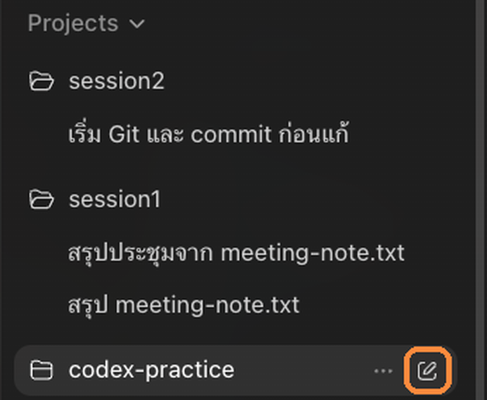
เอาเมาส์ไปวางที่ชื่อ project จะมีรูปดินสอขึ้นมา กดรูปดินสอเพื่อเริ่มแชตใหม่ใน project นั้น
ลองทำ 3 · ภาพ 2/4
พิมพ์ $ แล้วเลือก Skill Creator
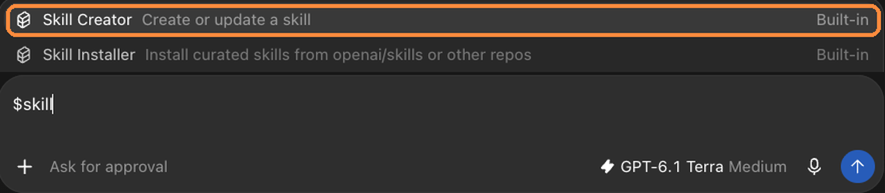
พิมพ์ $skill แล้วเลือก Skill Creator จากนั้นเล่าต่อว่าอยากได้ skill ชื่ออะไร ทำอะไร
ลองทำ 3 · ภาพ 3/4
Codex ขออนุญาตติดตั้ง skill
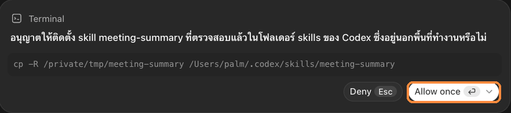
Skill Creator เก็บ skill ไว้ในโฟลเดอร์ส่วนตัวของเรา ซึ่งอยู่นอกโฟลเดอร์งาน Codex จึงถามก่อน อ่านว่าเป็นชื่อ skill ที่เราสั่ง แล้วกด Allow once
ลองทำ 3 · ภาพ 4/4
เรียก $meeting-summary ได้ผลแบบเดิม
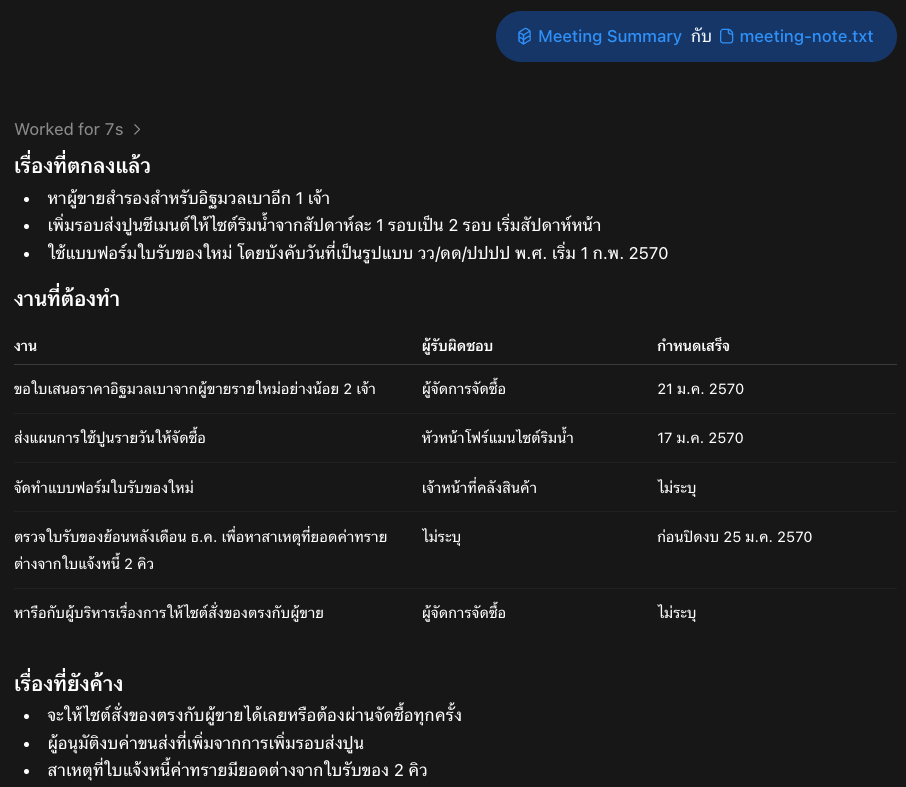
พิมพ์ /new แล้ว $meeting เลือก Meeting Summary ใส่ไฟล์ด้วย @meeting-note ได้ผล 3 หัวข้อโดยไม่ต้องพิมพ์ยาว
ใช้ของที่คนอื่นทำไว้
ติดตั้ง skill ของทีม และต่อ Codex กับโปรแกรมอื่น
skill ของทีม
ติดตั้งแค่คัดลอกโฟลเดอร์
วางโฟลเดอร์ skill ไว้ใน %USERPROFILE%\.agents\skills
ถ้า skill อยู่ในโฟลเดอร์งานของทีมอยู่แล้ว เปิดแล้วใช้ได้เลย
เปิดอ่าน SKILL.md ก่อนติดตั้งทุกครั้ง
MCP
ตัวเชื่อม Codex กับโปรแกรมอื่น
เช่น ให้ Codex คุมเบราว์เซอร์ หรือดึงงานจากระบบแจ้งปัญหา
เพิ่มได้ที่ Settings > MCP servers > Add server
ติดตั้งเฉพาะตัวที่ IT อนุญาต
อยากรู้ว่าต่ออะไรไว้บ้าง พิมพ์ /mcp
ลองทำ 4
ติดตั้ง skill ของทีม และต่อ MCP ตัวแรก
- ใน File Explorer เปิด practice-kit\common\team-skills คลิกขวาโฟลเดอร์ data-check แล้วเลือก Copy
- พิมพ์ %USERPROFILE% ในช่องที่อยู่ด้านบน กด Enter เข้าโฟลเดอร์ .agents แล้ว skills (ถ้าไม่มีให้สร้าง) แล้ว Paste
- ปิดแอป ChatGPT แล้วเปิดใหม่ สั่ง $data-check กับไฟล์ใน practice-kit\biz\reports
- สาย QA: ไปที่ Settings > MCP servers > Add server ใส่ค่าทางขวา กด Save แล้ว Restart จากนั้นพิมพ์ /mcp
ค่าที่ใส่ใน Add server (สาย QA)
ชื่อ: playwright
ชนิด: STDIO
คำสั่ง: npx @playwright/mcp@latest
พิมพ์ให้ Codex
ใช้ MCP playwright เปิด http://127.0.0.1:3100 แล้วบอกว่าหน้าเข้าสู่ระบบมีปุ่มอะไรบ้าง อย่ากดอะไร
ทำได้แล้ว ถ้า $data-check ตอบเป็นตารางปัญหาของข้อมูล และสาย QA เห็น playwright ใน /mcp
สาย QA
เทสไม่ผ่านเพราะระบบผิด
อย่าแก้เทสให้ผ่าน
Codex ชอบแก้ค่าที่คาดไว้ให้ตรงกับระบบ เทสก็จะผ่าน แต่ bug หลุดไป ให้ปล่อยไว้ แล้วรายงานว่าไม่ตรงข้อกำหนดข้อไหน
สาย QA ทีละขั้น
จากข้อกำหนด จนได้เทสทั้งชุด
QA-1
test case
เขียนจาก ข้อกำหนด ทุกข้อ
QA-2
ลองเล่น หา bug
ให้ Codex ลองกด แล้วเขียนรายงาน
QA-3
เทสหน้าเว็บ
เขียนครั้งเดียว รันได้ทุกวัน
QA-4
เทส API
เช็กว่าระบบ ตอบถูก ทุกกรณี
QA-5
รันทั้งชุด
สรุปว่าอะไรผ่าน อะไรไม่ผ่าน
ฝึกกับระบบเบิกวัสดุตัวอย่าง (ดับเบิลคลิก start.bat) มีข้อกำหนด 17 ข้อ และมีจุดที่ทำงานผิดซ่อนอยู่
ลองทำ QA-1
เขียน test case จากข้อกำหนด
- กด Ctrl+O เลือกโฟลเดอร์ practice-kit\qa แล้วสั่ง commit จุดแรกไว้ก่อน
- ส่งข้อความทางขวา
- เปิด testcases.csv ใน Excel สุ่มมา 5 ข้อ เทียบกับข้อกำหนดทีละบรรทัด
- พิมพ์ /new แล้วให้ Codex ช่วยตรวจแบบหัวหน้า QA (ข้อความอยู่ในคู่มือ QA-1)
พิมพ์ให้ Codex
ช่วยเขียน test case จาก requirements\requirements.md ข้อ REQ-04 ถึง REQ-09 บันทึกเป็น testcases.csv ให้ Excel เปิดภาษาไทยได้ มีคอลัมน์ TC-ID, REQ-ID, ขั้นตอน, ผลที่ควรได้, ประเภท
ข้อกำหนดทุกข้อต้องมีกรณีปกติและกรณีผิด ค่าที่มีขอบเขต ให้ลองค่าต่ำสุด สูงสุด และเลยขอบไป 1
ข้อกำหนดไม่ได้บอกตรงไหน จดคำถามไว้ใน questions.md อย่าเดา
ทำได้แล้ว ถ้า ข้อกำหนดทุกข้อมีกรณีปกติและกรณีผิด และชี้ได้ 1 ข้อที่ Codex เขียนเกินกว่าข้อกำหนดบอก
ลองทำ QA-2
ลองเล่นหา bug ด้วย @Browser
- ใน File Explorer เปิด practice-kit\qa\app ดับเบิลคลิก start.bat จะมีหน้าต่างสีดำขึ้นมา เปิดทิ้งไว้
- วางเมาส์ที่ project qa ในแถบซ้าย กดรูปดินสอ แล้วส่งภารกิจทางขวา
- ลองทำตามที่ Codex เจอด้วยมือตัวเอง 1 รอบ
- เขียนรายงาน bug ตามแบบในคู่มือ QA-2 หรือใช้ $bug-report
พิมพ์ให้ Codex
ใช้ @Browser ลองระบบที่ http://127.0.0.1:3100 (ชื่อผู้ใช้กับรหัสอยู่ใน README.md ในโฟลเดอร์นี้)
ภารกิจ: หา bug ตอนค้นหาและกรองรายการ ตามข้อ REQ-11 ถึง REQ-14
ลองพิมพ์ภาษาไทย ลองวันแรกกับวันสุดท้ายของช่วง ลองเว้นว่าง
เจออะไรแปลก จดขั้นตอนและแคปหน้าจอไว้ใน findings.md ห้ามกดอนุมัติหรือไม่อนุมัติ ห้ามเดาสาเหตุในโค้ด
ทำได้แล้ว ถ้า มีรายงาน bug อย่างน้อย 1 ใบ ที่เพื่อนข้าง ๆ อ่านแล้วทำตามเจอเหมือนกัน
QA-3 ถึง QA-5
ให้ Codex รันเทสให้ ไม่ต้องจำคำสั่ง
| อยากทำ | พิมพ์บอก Codex |
|---|---|
| รันเทสทั้งหมด | รันเทสทั้งหมด แล้วสรุปเป็นตาราง ว่าข้อไหนผ่าน ข้อไหนไม่ผ่าน เพราะอะไร |
| รันข้อเดียว | รันเฉพาะเทส TC-07 |
| หาเทสที่ผ่านบ้างไม่ผ่านบ้าง | รัน TC-05 ซ้ำ 5 รอบ แล้วบอกว่าไม่ผ่านรอบไหน เพราะอะไร |
| ดูว่าไม่ผ่านเพราะอะไร | ดู error ของเทสที่ไม่ผ่าน แล้วบอกว่าเป็นที่ระบบ หรือเทสเขียนผิด |
| เช็กว่าเทสตรวจจริง | บอกหน่อยว่าแต่ละเทส จับ bug แบบไหนได้ ยังไม่ต้องแก้ไฟล์ |
ลองทำ QA-3
เขียนเทสหน้าเว็บอัตโนมัติชุดแรก
- ใน File Explorer สร้างโฟลเดอร์ qa-tests ใน codex-practice แล้วคัดลอก testcases.csv กับ requirements\requirements.md จาก practice-kit\qa มาวาง
- กด Ctrl+O เลือกโฟลเดอร์ qa-tests ส่งข้อความทางขวา ถ้า Codex ขอใช้อินเทอร์เน็ต ให้กดอนุญาต
- ให้ Codex สร้าง AGENTS.md แบบโฟลเดอร์เทส (คู่มือหัวข้อ 5) แล้วสั่งเขียนเทสจาก testcases.csv (คู่มือ QA-3)
- สั่ง: รันเทสทั้งหมด 3 รอบ แล้วแยกว่าข้อไหนไม่ผ่านเพราะระบบผิด
พิมพ์ให้ Codex
ตั้งโปรเจกต์ Playwright ในโฟลเดอร์นี้ ด้วย npm init playwright@latest -- --quiet --browser=chromium --lang=ts แล้วเปิดใช้ git และ commit ทุกไฟล์
ตั้งให้เทสไปที่ http://127.0.0.1:3100 ใช้ chromium อย่างเดียว รันทีละเทส (workers 1) แล้วลบไฟล์ตัวอย่าง example.spec.ts
บัญชีทดสอบให้อ่านจาก TEST_USER กับ TEST_PASSWORD ถ้าไม่มี ใช้ requester1 / demo1234 (บัญชีสมมติ)
ทำได้แล้ว ถ้า เทสที่ผ่าน ผ่านครบทั้ง 3 รอบ และเทสที่ไม่ผ่าน บอกได้ว่าไม่ตรงข้อกำหนดข้อไหน โดยไม่ได้แก้เทสให้ผ่าน
ลองทำ QA-4
เทส API: ระบบตอบถูกทุกกรณีไหม
- เปิดระบบตัวอย่างด้วย start.bat ถ้ายังไม่ได้เปิด
- ในโฟลเดอร์ qa-tests ส่งข้อความทางขวาให้ Codex
- สั่ง: รันเทส tests/api.spec.ts แล้วสรุปผล
- ให้สรุปเป็นตาราง: ควรได้รหัสอะไร / ได้จริงเท่าไร / ข้อกำหนดข้อไหน
พิมพ์ให้ Codex
อ่านสเปกที่ http://127.0.0.1:3100/openapi.json แล้วเขียน API test ไว้ใน tests/api.spec.ts
ให้ครอบ 4 แบบ: ไม่ล็อกอินต้องได้ 401 (REQ-02), ข้อมูลผิดต้องได้ 400 (REQ-05 ถึง 07), คนไม่มีสิทธิ์ต้องได้ 403 (REQ-15), เปลี่ยนสถานะซ้ำต้องได้ 409 (REQ-16)
ก่อนแต่ละเทส เรียก POST /api/reset ให้ข้อมูลกลับเป็นค่าเริ่มต้น
บัญชีผู้อนุมัติอ่านจาก APPROVER_USER กับ APPROVER_PASSWORD ถ้าไม่มี ใช้ approver1 / demo1234
ทำได้แล้ว ถ้า มีเทสครบ 4 แบบ และเจอ bug ที่กดจากหน้าเว็บมองไม่เห็นอย่างน้อย 1 จุด
สายหน่วยงาน ทีละขั้น
จากงานที่ทำซ้ำทุกสัปดาห์ จนได้เครื่องมือที่เพื่อนใช้ได้
BIZ-1
เลือกงาน
เขียนสั้น ๆ ว่า เอาอะไรเข้า ได้อะไรออก
BIZ-2
ดูข้อมูลก่อน
ให้ Codex หา จุดที่ข้อมูล ผิดปกติ
BIZ-2/3
ทำเครื่องมือ
โปรแกรมจัดการ Excel หรือ หน้าเว็บ ไฟล์เดียว
BIZ-4
ตรวจตัวเลข
ยอดต้องตรง กับที่คิดเอง ใน Excel
BIZ-4
เขียนวิธีใช้
เพื่อนใช้ได้เอง ไม่ต้องมาถาม
ฝึกกับรายงานรับวัสดุ 3 ไซต์ในไฟล์ฝึก ข้อมูลมีจุดผิดซ่อนอยู่ 7 แบบ ผู้สอนมียอดที่ถูกต้อง
ลองทำ BIZ-1
เลือกงานจริงของคุณ แล้วเขียนสั้น ๆ 1 หน้า
- เลือกงานที่ทำทุกสัปดาห์ มีวิธีทำชัด และเช็กได้ด้วยตัวเลข
- สร้างโฟลเดอร์ใหม่ กด Ctrl+O เลือกโฟลเดอร์นั้น เขียนตามแบบทางขวา เซฟเป็น brief.md (ให้ Codex สร้างไฟล์ให้ก็ได้)
- บอก Codex: อ่าน brief.md แล้วถามสิ่งที่ยังไม่ชัด ไม่เกิน 5 ข้อ ยังไม่ต้องทำโปรแกรม
- แลกกับเพื่อนข้าง ๆ อ่านของกันและกัน
# งานที่อยากให้ช่วย: <ตั้งชื่อ>
- ตอนนี้ทำยังไง: <ใช้เวลากี่นาที ทำบ่อยแค่ไหน>
- ข้อมูลที่ใช้: <ไฟล์อะไร มีคอลัมน์อะไร>
- อยากได้อะไรออกมา: <ไฟล์อะไร ใครเปิดดู>
- วิธีคิด: <สูตร การปัดเศษ>
- ระดับความลับ: <เปิดเผยได้ / ภายใน / ลับ / ข้อมูลส่วนบุคคล>
- ดูยังไงว่าถูก: <ตัวเลขที่รู้คำตอบอยู่แล้ว>
- รอบนี้ยังไม่ทำ: <สิ่งที่ตัดออกไปก่อน>
ทำได้แล้ว ถ้า เพื่อนอ่านแล้วเล่ากลับได้ว่า เครื่องมือนี้เอาอะไรเข้า ได้อะไรออก และรู้ได้ยังไงว่าถูก
ลองทำ BIZ-2
รวมรายงานรับวัสดุจาก 3 ไซต์
- กด Ctrl+O เลือกโฟลเดอร์ practice-kit\biz แล้วสั่ง commit จุดแรกไว้
- ขั้นแรก ให้ Codex ดูก่อนว่าข้อมูลผิดตรงไหน (ข้อความทางขวา)
- ขั้นต่อไป ให้ทำโปรแกรมรวมไฟล์ กับไฟล์ดับเบิลคลิก run.bat (ข้อความอยู่ในคู่มือ BIZ-2)
- เลือก 1 ไซต์ 1 วัสดุ คิดเองใน Excel แล้วเทียบกับที่โปรแกรมสรุป
พิมพ์ให้ Codex
ช่วยดูทุกไฟล์ใน reports/ กับ price-list.csv ยังไม่ต้องทำโปรแกรม และห้ามแก้ไฟล์
บอกเป็นตารางว่าข้อมูลมีปัญหาอะไรบ้าง: ปัญหา | ไฟล์ | กี่แถว | ตัวอย่าง
ดูอย่างน้อย: แถวว่าง แถวซ้ำ วันที่เขียนหลายแบบ (พ.ศ./ค.ศ.) ชื่อไซต์สะกดไม่เหมือนกัน ตัวเลขที่ใส่เป็นข้อความหรือมีคอมมา หน่วยไม่ตรงกับ price-list.csv
ทำได้แล้ว ถ้า เจอปัญหาครบทุกแบบ และยอดรวมตรงกับที่ผู้สอนเฉลย
ก่อนให้คนอื่นใช้
เช็ก 4 ข้อนี้ก่อน
ยอดรวมตรงกับที่คิดเองใน Excel
แถวที่ถูกตัดทิ้ง มีเหตุผลบอกไว้ทุกแถว
รัน 2 ครั้งได้เหมือนเดิม และไฟล์ต้นฉบับไม่ถูกแก้
ไม่มีรหัสผ่านหรือข้อมูลจริงในไฟล์ที่แชร์
ไฟล์ดับเบิลคลิก (run.bat) ที่ให้ Codex ทำให้
@echo off
cd /d "%~dp0"
python merge_reports.py
pause
ลองทำ BIZ-3
หน้าเว็บคิดราคาวัสดุ
- บอก Codex ทำไฟล์ estimate.html (ข้อความอยู่ในคู่มือ BIZ-3)
- Codex จะรัน server ในเครื่อง แล้วใช้ @Browser เปิดหน้าเว็บ กด Allow once ทุกครั้งที่ถาม (ปกติ 2 ครั้ง)
- เปิด 127.0.0.1:8000/estimate.html ใน Edge เอง เทียบตัวเลขกับทางขวา กดดาวน์โหลด CSV แล้วเปิดใน Excel
- เพิ่มทีละอย่าง เช่น ช่องชื่อไซต์ แล้วลองใหม่ด้วย @Browser
ตัวเลขที่ต้องได้
MAT-001: 142.50 x 10 = 1,425.00
MAT-003: 420.00 x 2 = 840.00
มูลค่าสินค้า: 2,265.00
VAT 7%: 158.55
รวมทั้งสิ้น: 2,423.55
ทำได้แล้ว ถ้า หน้าเว็บขึ้น 2,265.00 / 158.55 / 2,423.55 ตรงทุกตัว และดาวน์โหลดไฟล์ไปเปิดใน Excel แล้วภาษาไทยไม่เพี้ยน
BIZ-3 · ภาพ 1/3
บรรทัดสุดท้าย: รัน server แล้วใช้ @Browser
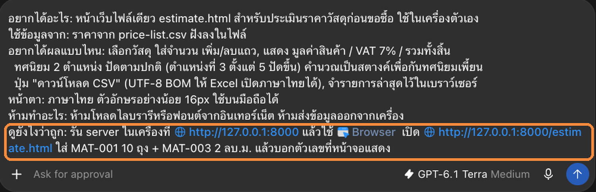
@Browser เปิดไฟล์ในเครื่องตรง ๆ ไม่ได้ จึงต้องให้ Codex รัน server ในเครื่องก่อน ตอนพิมพ์ @Browser ให้เลือกบรรทัด Browser
BIZ-3 · ภาพ 2/3
กด Allow once 2 ครั้ง
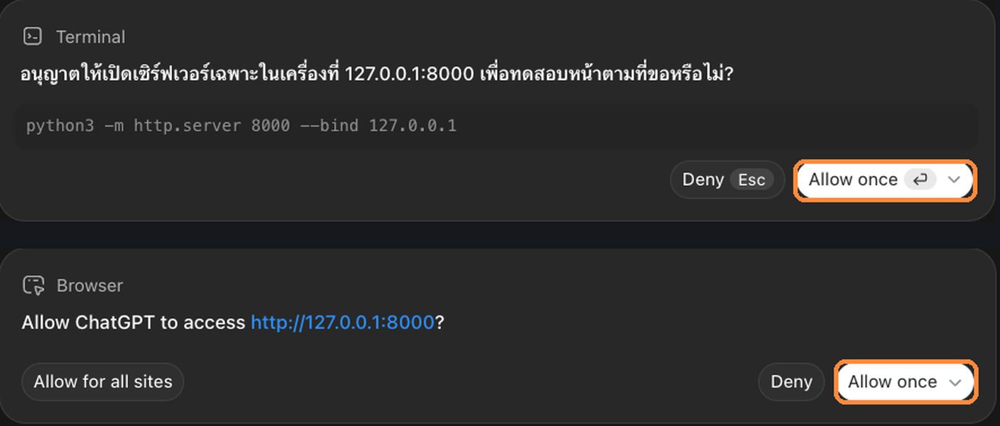
ครั้งแรกขอเปิด server ในเครื่อง ครั้งที่สองขอให้ Browser เข้าหน้าเว็บ กด Allow once ทั้งคู่ ไม่ต้องกด Allow for all sites
BIZ-3 · ภาพ 3/3
เทียบตัวเลขบนหน้าเว็บกับเฉลย
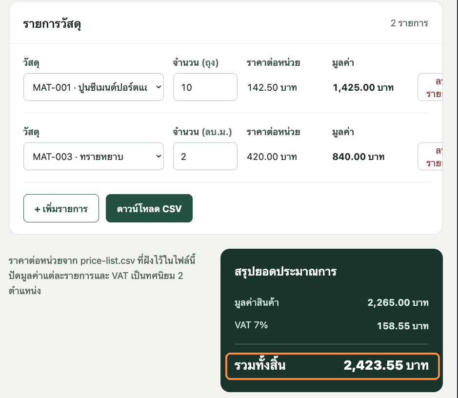
รวมทั้งสิ้นต้องได้ 2,423.55 บาท ถ้าไม่ตรง ให้บอก Codex ว่าแถวไหนผิด แล้วสั่งแก้ทีละอย่าง
ติดตรงไหน
ปัญหาที่เจอบ่อย
| อาการ | ทำแบบนี้ |
|---|---|
| Codex บอกว่าเสร็จ แต่ไฟล์ไม่เปลี่ยน | สั่ง Codex: ใช้ git เช็กว่าไฟล์ไหนเปลี่ยน แสดงผลจริงให้ดู |
| Codex แก้ไฟล์เกินที่สั่ง | สั่งย้อนกลับจุดล่าสุด แล้วสั่งใหม่ บอกว่า แก้แค่ไฟล์นี้ |
| สั่งแก้แล้วก็ยังผิดอยู่ | หยุดก่อน เริ่มแชตใหม่ด้วย /new แล้ววาง error ทั้งหมดให้ดู |
| เปิดใน Excel แล้วภาษาไทยเพี้ยน | บอก Codex: บันทึกใหม่ให้ Excel เปิดภาษาไทยได้ |
| ขึ้นว่า running scripts is disabled | บอก Codex: ใช้ npm.cmd กับ npx.cmd แทน |
| Codex บอกว่าไม่เจอ git, node หรือ python | ปิดแอปแล้วเปิดใหม่ ยังไม่ได้ให้รีสตาร์ตเครื่อง |